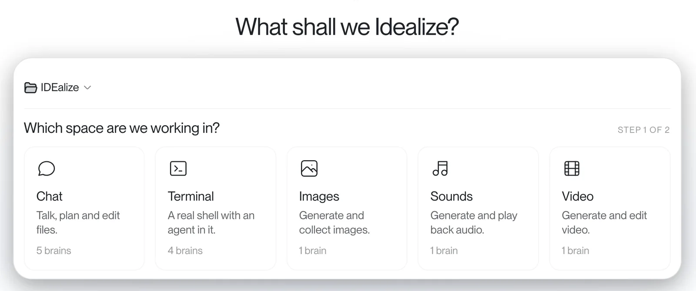
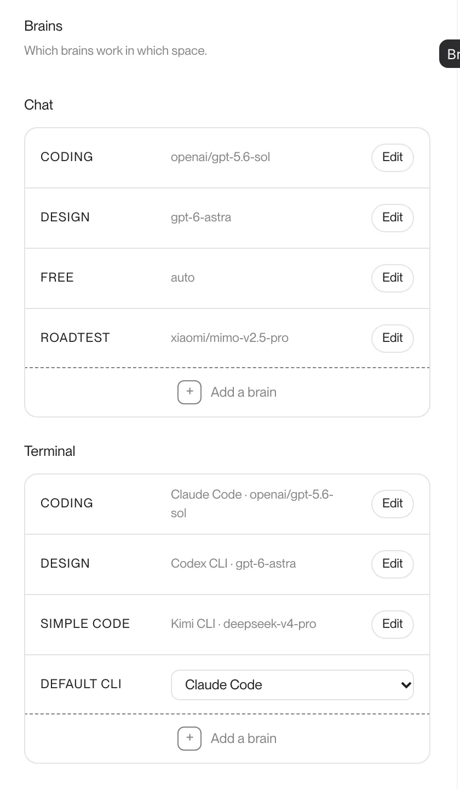
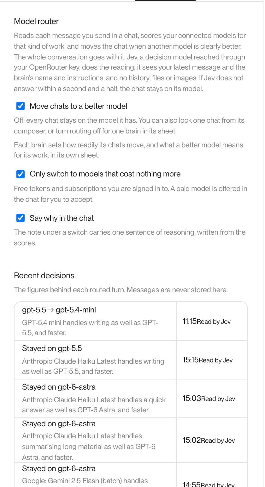
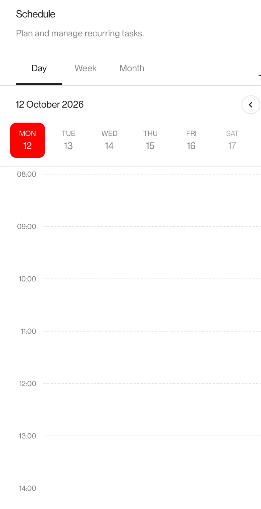
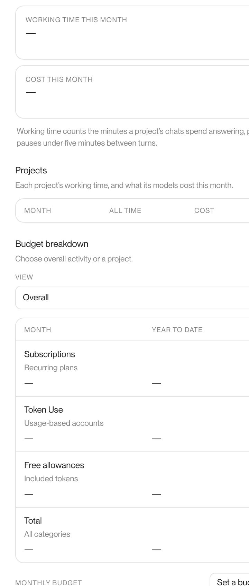
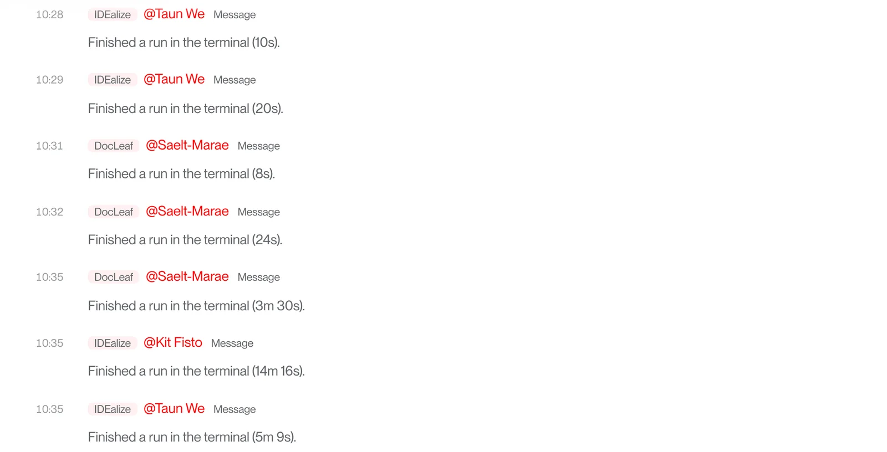
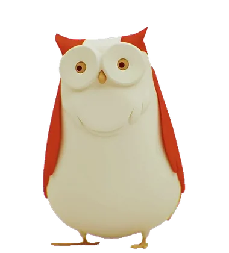

AI tools are brilliant.
Using them is less than ideal.
IDEalize is a nicer place to use them. CLIs, models, files, notes, media and agents live in one workspace, so you stop pretending a terminal is a lovely place to spend the day.
It started with wanting a design-led IDE for agent CLIs.
The CLIs are useful, and I still want them there. I just do not want the whole experience to feel like doing admin in a server cupboard.

Make it yours
Colours, type and spacing are yours to set, panel by panel.
Pick the mode
Chat for steering. Terminal for the guts. Same project around both.
Stay close
Review the work, nudge it and keep the context.
Not every job needs a big (expensive) brain.
Some jobs need the clever model. Some need the fast one. Some should quietly use the no-cost tokens you already have before they spend real money.
Give each space its own brains for coding, design and quick jobs. The router reads every message and moves the chat when another model can do it as well for less. It tells you why.


Moved to a smaller model that writes as well, and faster. It said so in the chat.
Models should help organise your work. They should not take it from you.
Projects are folders. Notes, docs, assets and code sit somewhere real. If one model is annoying today, or another is better tomorrow, the project is still there waiting for the next brain.
- Hatch/
- docs/decisions, specs
- notes/what future-you wants
- assets/images, sound, video
- src/the build
A folder you control.
Code, docs, decisions and assets stay portable.
Keep the useful bits.
Notes hold the things future-you actually wants back.
Swap the brain, keep the project.
The work stays on disk when the model changes.
It should not stop at code.
Most ideas sprawl. The copy, the image, the soundtrack, the edit and the build should belong to the same thing.
Text, images, sound, movies, code. Same mess, one project.
Write the hero line like a person said it.
$ pnpm build ✓ built in 4.1s $ git push

Put repeat work where you can see it.
Reminders, checks and recurring jobs you would otherwise forget until they bite.
See where the chat wandered.
For long chats, where the useful bit was five turns and two detours ago.
Files and notes should be boringly useful.
Find a file, drop it into the chat, keep notes beside the work.

Add the missing piece. Watch the spend.
Plugins grow the workspace. Time and cost per project show up before they become a problem.
Some work needs a little crew. One heroic chat won't do.
Agents talk to each other, hand work over and keep one shared picture of what is moving. I did not want to become the person polling every agent to ask if it is done yet.


Ask what is going on, nudge the work, then get back to the thing you are making. From the desk or from Telegram.
Set it up around how you work.
Open a project folder.
Files, notes, assets and docs start somewhere real.
Pick the space and the brain.
Chat, terminal, images, sounds or video. Then choose what powers it.
Idealize it!
Bring in agents, Powell, scheduled tasks and plugins as the project grows.
Make AI work somewhere you actually like.
Install IDEalize on macOS or Windows. Bring the model accounts, tools and folders you already use.
On a Mac, paste this into Terminal. It installs IDEalize and keeps it up to date.
curl -fsSL https://raw.githubusercontent.com/jamiejefferson/IDEalize/main/install.sh | bashOn Windows, download the installer. If Windows warns you, choose More info, then Run anyway.